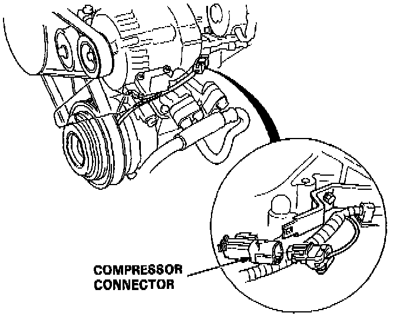
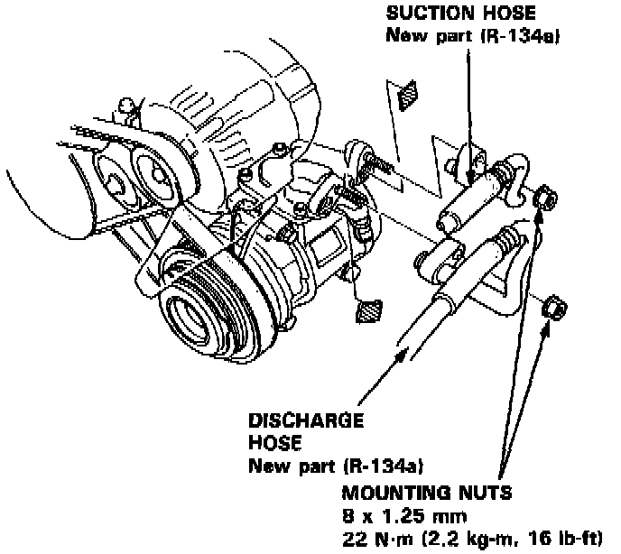
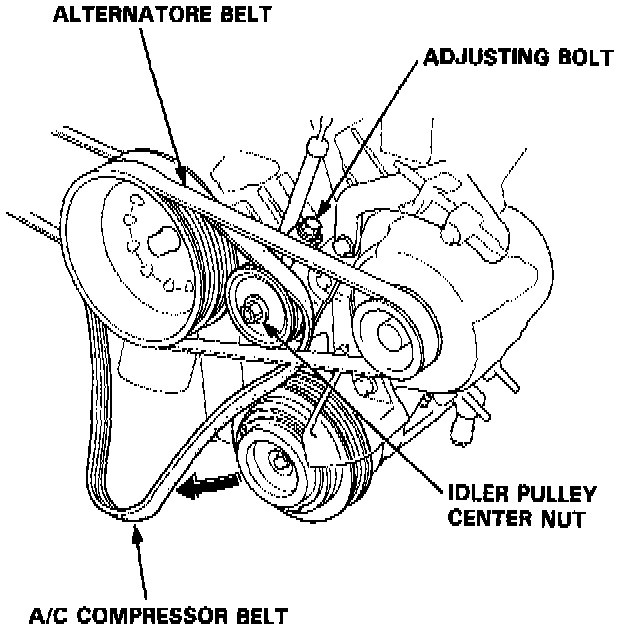
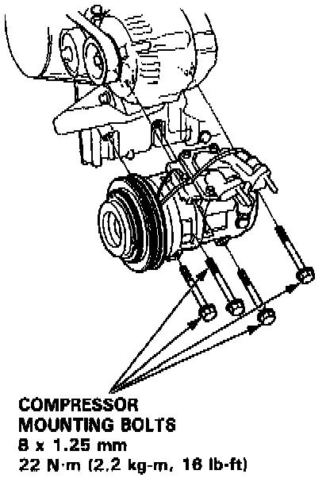
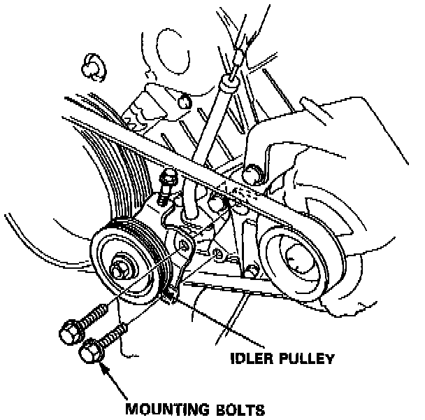
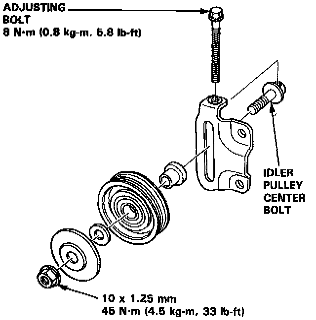

Compressor HVAC: Service and Repair
1. If the compressor still works, run the engine at idle for a few minutes with the A/C ON, then shut the engine off and disconnect the negative cable from the battery.2. Recover the refrigerant from the A/C system with an R-134a refrigerant Recovery/Recycling/Charging System.

3. Disconnect the compressor connector.
4. Raise the car on a hoist. Make sure it's properly supported.

5. Disconnect the suction and discharge hoses from the compressor. Plug or cap the lines immediately after disconnecting, to avoid moisture and dust contamination into the system.

6. Loosen the idler pulley center nut and adjusting bolt, then remove the A/C compressor belt from the compressor.
7. Support the front of the car on safety stands and remove the engine splash shield.

8. Remove the four compressor mounting bolts and the compressor.

9. If necessary remove the idler pulley.

Check the idler pulley bearing for play and drag. Replace it with a new one if it's noisy or has excessive play or drag.
10. Install the compressor in the reverse order of removal, and:
- If you're installing a new compressor, drain all the refrigerant oil out of the old compressor and measure its volume. Subtract the volume of old oil from 180 ml (6 fl. oz, 6.34 Imp. oz); the result is the amount of oil you should drain from the new compressor (through the suction fitting).
- Replace 0-rings with new ones at each fitting, and apply a thin coat of refrigerant oil before installing them.
NOTE: Be sure to use the right 0-rings for R-134a to avoid leakage.
- Use (ND-OIL 8) oil for R-134a Nippondenso piston type compressors only.
- Do not return the oil to the container once dispensed and never mix with other refrigerant oils to avoid contamination.
- Immediately after using the oil, replace the cap on the container and seal it to avoid moisture absorption.
- Do not spill the refrigerant oil on the car, it may damage the paint; if the refrigerant oil contacts the paint, wash it off immediately.
11. Adjust the compressor belt.
After adjusting the compressor belt, tighten the idler pulley center nut.
Then tighten the adjusting bolt securely.
12. Charge the system.
13. Test system performance.